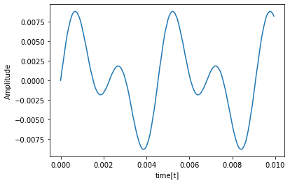
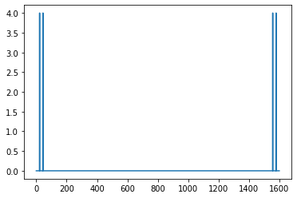

cepstrum解析実装¶
音声の準備¶
[7]:
import numpy as np
from numpy import array, arange, sin
import cmath
import matplotlib.pyplot as plt
[8]:
a = 0.01 # 最大振幅
f_list = [220, 440] # まぜる周波数
fs = 16000 # サンプリング周波数
sec = 0.1 # サイン波の持続時間
amp = float(a) / len(f_list) # まぜる時の振幅
data = []
for n in arange(sec * fs):
s = 0.0
for f in f_list:
s += amp * sin(2 * cmath.pi * f * n / fs)
data.append(s)
data = array(data)
[9]:
time = [round(i/fs, 5) for i in range(data.size)]
plt.plot(time[0:160], data[0:160])
plt.xlabel("time[t]")
plt.ylabel("Amplitude")
plt.show()

[10]:
import IPython.display
IPython.display.Audio(data=data, rate=fs)
[10]:
DFT¶
[58]:
def dft(x):
N = len(x)
A = arange(N)
k = A.reshape(1, -1)
t = A.reshape(-1, 1)
# 行列演算形式になっているがwikiの数式そのまま
M = x * cmath.e**(-1j * 2 * cmath.pi * k * t / N)
return np.sum(M, axis=1)
[59]:
print("振幅スペクトラム")
plt.plot(np.abs(dft(data)))
plt.show()
振幅スペクトラム
